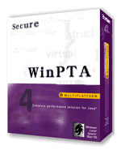
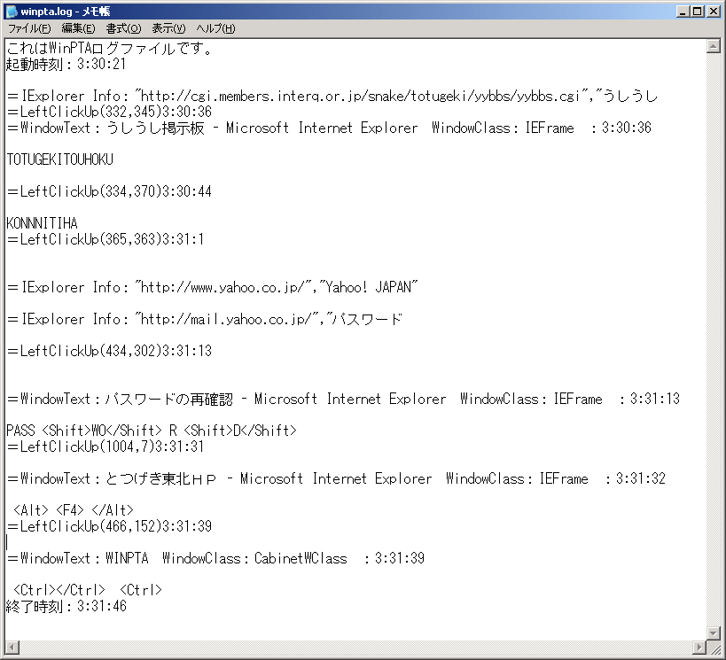
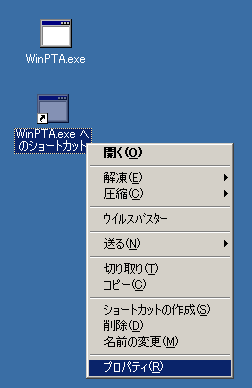
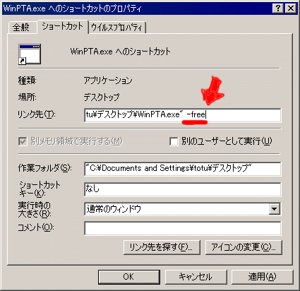
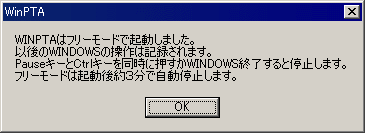
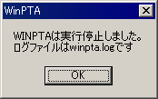
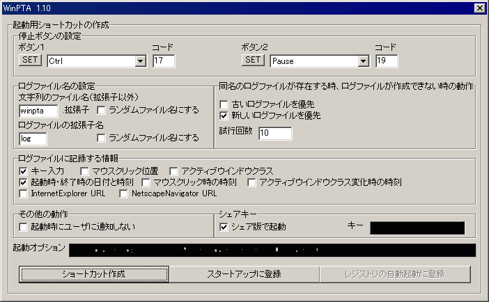
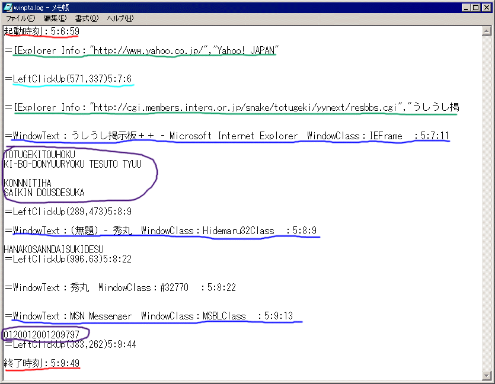

WinPTA（WINDOWSの影でキーボード入力やURLを監視し記録する管理・保守ツール）ｖ1.40 とつげき東北 TOP
動作環境：
WINDOWS95・WINDOWS98・WINDOWSNT・WINDOWSMe・WINDOWS2000・WINDOWSXp
ログファイルが作成可能なHD容量を必要とする。
開発環境：
Borland C++ Builder Professional Version5.0

イメージ画像
最新バージョンの情報
・ログファイルの作成位置変更
・特殊キー（Altなど）のログも記録するようにした
WinPTAはバージョンアップしました。
このページは旧バージョンの説明ページです。
最新バージョンはこちら。
紹介
WinPTAとは、「WINDOWSにおけるPTA」の意味で、「ウィンピーティーエイ」と読みます。
このソフトは、コンピュータに常駐してキー入力や開いたウインドウ、ブラウザの移動したURL等を監視し、ファイルに記録を取るソフトです。
当然、パスワード入力やメールの文章などもつつぬけになります。
後からログファイルを見ることで、そのコンピュータで行われたほとんど全ての操作を知ることができます。
WinPTAは、実行中もタスクトレイに表示されず、タスクマネージャでも見ることができませんので、他者から隠蔽して用いることができます。
主な用途として、次のようなものが考えられます。
・会社や団体内で使用するPCの保守と管理
・学校などにおける、コンピュータの監視といたずら行為への抑止力
・危険な情報のあるサイト等へのお子様のアクセス状況の把握
・身内の浮気調査等（浮気調査ツール・素行調査ツールとして）
また、単独のユーザが用いるPCの場合は、行動記録や簡易メモとしてもお使いいただけるでしょう。
フリーモードでは、起動時刻と終了時刻、および、キーボード入力だけを記録することができます。
フリーモードは、悪用を防ぐため、起動後約３分でメッセージを表示して自動的に停止します。
シェア登録をするとこの制限はなくなり、また、より詳細な情報を記録できるようになります。
またユーザからログファイルを隠蔽したり、他の様々な機能を使う設定を行うことができます。
現在、WinPTA2.10（評価版）も同時に公開しています。
ログファイルの暗号化や作成日偽装、実行ファイルの偽装、exeファイルの実行時偽装など、よりセキュアに管理していただくための様々な機能が搭載されています。
↓ログファイル例

掲示板を訪れたこと、そこに書き込んだ内容、そのURLがわかります。
またYahooを利用していること、パスワードが「passWOrD」であるらしいことがわかります。
マウス操作の一つ一つの履歴も残りますし、Altキーなどの操作も記録されます。
導入と起動の方法
利用規約に同意された方のみ使用可能です。
WinPTAv1.40ダウンロード（lzh圧縮）
WinPTAv2.10評価版ダウンロード（lzh圧縮） （使用方法が変化しています。付属のtxtファイルをご覧ください）
ここから、WinPTAをダウンロードして解凍してください。
通常のソフトとは違い、このソフトはそのまま実行ファイルをダブルクリックして起動しません。
各種設定を含んだショートカットを作成しておいて、実際の起動はそのショートカットから行うという方式になっています。
・起動用ショートカットを作成する
ではさっそく、実際に設定を含んだショートカットを作成してみましょう。
まずは、実行ファイルを右クリックして「ショートカットを作成」してください。
ショートカットが作成できたら、今度はそのショートカットを右クリックし、「プロパティ」を開きます。


プロパティを開くと上のような画面が出ます。細かい表示は環境によって違うので気にしなくてかまいません。
「リンク先」項目のところに「\WinPTA.exe"」という表記があるので、上の画面の赤い部分と同じように「
-free」と記入してください。半角で、「スペース・マイナス・エフ・アール・イー・イー」です。
できたら「OK」を押します。
これで、フリーモード（無料の試用版）でのWinPTA起動用ショートカットができました。
・WinPTAをフリーモードで実行する
今作成した、フリーモード用のWinPTAショートカットをダブルクリックすると、WinPTAがフリーモードで動作します。

表示されるように、これ以降のWINDOWS操作が記録されます。
ただし、フリーモードでは機能に制限があるため、キーボード入力だけを記録することができます。
また表示の通り、起動後約３分間で自動的に実行を停止します。
実験のために、キーボードで「ABCDE」と押しておくとよいでしょう。
Pauseキーを押しながらCtrlキーを押すか、３分経つと、WinPTAは下のようなメッセージを表示して停止します。

ログファイル「winpta.log」に、今回のキー操作のログ（記録）が残っています。
メモ帳などで開いて確認して下さい。「ABCDE」のキー入力が記録されているはずです。
ここで「OK」を押すと、設定画面に移行します（フリーモードでは、設定画面で設定できることはごく限られています）。
・設定画面の操作

WinPTAが停止するか、またはショートカットで（「
-free」のかわりに）「 -setting」のパラメータを与えて起動すると、設定画面が開きます。
ただし、フリーモードでは設定できるものはありません。
シェアモード使用キーをご購入の方は、設定画面でシェアキーを入力することで、各種設定と管理が可能になります。
ここでは、各種設定を行い、その設定の下に起動するためのショートカットを自動で作成することができます。
目的に応じて、設定の異なるいくつかのショートカットを作成しておいて使い分けると便利です（ショートカット自体の名称は好きに変更してかまいません）。
停止ボタンの設定
WinPTAの動作を停止させるために押す２つのボタンを変更できます。
「SET」を押してから希望するキーを実際に押すか、中央のリストボックスから選択するか、キーコード番号を直接入力して設定できます。
ログファイル名の設定
フリーモードでは「winpta.log」というログファイルしか作れませんでした。
つまり、WinPTAを起動しなおすとログファイルは自然に消えてしまいます。
シェア版では、ログファイルを複数作成できます。
「ランダムファイル名」とは、完全にランダムな文字列をファイル名に充てることを意味します。
例えば、拡張子を除くファイル名をランダムにしておいて、拡張子を「ABC」にすると、「XKQDPA.ABC」とか「TTVALO.ABC」とかいったファイル名のログファイルが作成されます。
ログファイル名の変更は、WinPTAの情報隠蔽性のために重要です。
同名のログファイルが存在する時、ログファイルが作成できない時の動作
同じ名前のログファイルがある時、ここで指定した「試行回数」だけ、ログファイルの再作成を試みます。
それでも同じ名前になった場合は、「古いログファイルを優先」するか「新しいログファイルを優先」するか選択できます。
ログファイルに記録する情報
ログファイルに記録したい情報のチェックボックスに、チェックをいれてください。
各々の項目と情報の対応は下図の通りです。

起動・終了時刻
マウスクリックの位置と時刻
InternetExplorerのURL
アクティブウインドウクラスの情報と時刻
キー入力履歴
起動オプション
上で設定を変えると、必要なオプションスイッチがここに自動的に書き加えられます。ユーザが変更する必要はありません。
その他の動作
「起動時にユーザに通知しない」をチェックしておくと、WinPTAが起動されるごとに、そのことをユーザに報告しないようにします。
WinPTAの導入が第三者の監視目的でない場合には、誤作動を防止するためにチェックしておくと良いでしょう。
「ショートカット作成」
上で設定した起動をするためのショートカットを、WinPTAがあるフォルダに作成します。
「スタートアップに登録」
上に設定した起動をするショートカットをスタートアップに登録し、PCが起動されるたびに自動的に実行されるようにします。
こうしておくことで、目を離している間に操作される入力も監視できるようになります。
自動起動を解除するには、スタートアップからショートカットを削除してください。
「レジストリの自動起動に登録」
スタートアップを介さずに自動起動にするためのボタンです。
これによって、WinPTAを一般的なWINDOWSユーザのほとんどの目から完全に隠蔽できます。
安全性・操作性などの問題から、現在導入を検討中です。
シェアウェアキー購入法
小規模ライセンス 5000円 （5台以下のコンピュータに対して導入することができます。個人向け）
大規模ライセンス １台1000円 （6台以上のコンピュータに対して導入する場合、１台あたり1000円です。企業・学校等法人向け）
振込み方法 郵便振込
代金を下記に送金する。
ゆうちょ銀行 店番号 ４３８（四三八） 普通預金 口座番号 1245563
この時、振り込んだ人が特定できるよう、本名でなくてもかまいませんので他とかぶらない名前をご記入ください。
記号・番号は絶対に間違えないように、独立に２回メモって行くことを推奨します（今のところこのようなミスの例はありませんが、万一間違えて振り込んだ場合、鍵をお送りできません！）。
↓
totutohoku@hotmail.com←こちらに、記入した名前を誤りなく明記してメールする
↓
とつげき東北が入金を確認し、「鍵」を返信する
↓
「鍵」を利用してシェアモードを実行する
不明な点は、メールでお問い合わせください。なお、毎日のように郵便局に行くわけではありませんので、５日程度かかることもあります。ご了承ください。
振り込まれた金額は全額、代金＋寄付とみなされます。料金を返金することはできませんので、間違いないように振り込んでください。
間違って5000万円振り込んだ場合、4999万5000円は寄付としてとつげき東北に譲渡したものとみなします（笑）。
シェアウェアをご購入する場合は、フリーモードで動作を確認してからにしましょう。
「動作しない」等の報告は今まではありませんが、万一、環境依存などで動作しない場合でも返金できませんので、よろしくお願い致します。
FAQ（よくある質問と回答）
・シェア版では、「起動しました」「終了しました」などのメッセージが出ないようにできますか？
もちろんできます。
・WinPTA自体が、ユーザに「ばれることなく」動作しますか？
基本的にそのように作られたソフトです。
WinPTA本体を深い階層のフォルダで実行するようにして、本体の実行ファイル名も書き換えてしまえば、通常利用において「発見」されることはないと思います。
ただし、それは当然のことながら相手のスキルや警戒度にもよるでしょう（例えば相手もまたWinPTAのようなソフトを自作して使っていたとしたらどうでしょう）。
「PCを用いてごく一般的な業務をこなすくらいのスキルの人」が、WinPTAの存在を感知しWinPTAを発見し、なおかつ対応できるということは考えにくいです。
・PCにゴミを残したりせずアンインストールできますか？
できます。
具体的には、WinPTA本体、ログファイル、作成したショートカットを全てゴミ箱に移動するだけで、導入前の状態と同じになります。
・郵便局で振込みの時に、相手の名前がわからないと振込みできないと言われましたが？
なぜか相手の名前がわからないと振込みできない郵便局と、できる郵便局があります。
郵便局に設置されている機械を使えば、そうした面倒なこともなく手軽でスムーズに入金できます。
・安全ですか？
そんな心配は不要です（笑）。
一応、某株式会社システム開発室でも導入され使用されています。
特典
シェアウェアキーをご購入いただいた方には、ご希望なら以下のサービスアプリケーションを配布いたします。
「WinPTA_Terminator」
PC上の正規WinPTAの実行を全て中断し、ログファイル名を表示させるツールです。
万一、WinPTAの存在を第三者に関知され逆に悪用された場合でも、このツールがあれば即座に発見できます。
WinPTAは、特に大きなバージョンチェンジをしない限り、基本的にバージョンアップ無償です。
バージョン情報
1.00 初公開版
1.10 インターフェイス改良版
1.20 ログファイルの作成位置を変え、ショートカットの場所でなく、本体のフォルダに作るようにした。
1.30 特殊キー（AltやCtrlやファンクションキーなど）の履歴も残すようにした。
1.40 UI改良
注意
・ツールの方針について
WinPTAは、決してクラッキングツールではありませんし、法律に抵触する目的での使用を堅く禁じます。
・不正アクセス行為の禁止等に関する法律
以下、主要部の引用。法律を守れないおばかさんはこのソフトを利用してはいけません。
『
（不正アクセス行為の禁止）
第三条 何人も、不正アクセス行為をしてはならない。
２ 前項に規定する不正アクセス行為とは、次の各号の一に該当する行為をいう。
一 アクセス制御機能を有する特定電子計算機に電気通信回線を通じて当該アクセス制御機能に係る他人の識別符号を入力して当該特定電子計算機を作動させ、当該アクセス制御機能により制限されている特定利用をし得る状態にさせる行為（当該アクセス制御機能を付加したアクセス管理者がするもの及び当該アクセス管理者又は当該識別符号に係る利用権者の承諾を得てするものを除く。）
二 アクセス制御機能を有する特定電子計算機に電気通信回線を通じて当該アクセス制御機能による特定利用の制限を免れることができる情報（識別符号であるものを除く。）又は指令を入力して当該特定電子計算機を作動させ、その制限されている特定利用をし得る状態にさせる行為（当該アクセス制御機能を付加したアクセス管理者がするもの及び当該アクセス管理者の承諾を得てするものを除く。次号において同じ。）
三 電気通信回線を介して接続された他の特定電子計算機が有するアクセス制御機能によりその特定利用を制限されている特定電子計算機に電気通信回線を通じてその制限を免れることができる情報又は指令を入力して当該特定電子計算機を作動させ、その制限されている特定利用をし得る状態にさせる行為
（不正アクセス行為を助長する行為の禁止）
第四条 何人も、アクセス制御機能に係る他人の識別符号を、その識別符号がどの特定電子計算機の特定利用に係るものであるかを明らかにして、又はこれを知っている者の求めに応じて、当該アクセス制御機能に係るアクセス管理者及び当該識別符号に係る利用権者以外の者に提供してはならない。ただし、当該アクセス管理者がする場合又は当該アクセス管理者若しくは当該利用権者の承諾を得てする場合は、この限りでない。
（罰則）
第八条 次の各号の一に該当する者は、一年以下の懲役又は五十万円以下の罰金に処する。
一 第三条第一項の規定に違反した者
二 第六条第三項の規定に違反した者
第九条 第四条の規定に違反した者は、三十万円以下の罰金に処する。
』
・ツールの不正使用について
WinPTAは、シェアモードの不正使用に対して比較的「嫌らしい」対処策を持っています。
一見、うまく動作しているように見えて、実はそうではないような動作を行うようにプログラムした部分も少なくありません。
例えばシェアモードのキーのチェックはあまり厳戒ではなく、そのかわりに、WinPTAの動作中に重大な挙動をしたりします。
仮に逆アセンブルして「キーチェックを通る改造」ができたとしても、キーのうちの一部の誤ったビットの存在は、WinPTAの基本的な動作に悪影響を与えます。キー自体も、キーを生成するコードも、またキー全体を推定するための大きな手がかりとなる情報も、このソフトのソースに直接含まれていません。不正使用者が様々な「害悪」を回避するには、このソフトのほとんど全てのコードを理解する必要があります・・・それまでにPCが安全に動作を続けていればですが。
当然、正規ユーザが普通にキーを入力して間違えたくらいでは全く問題ありませんが、不正使用に対しては強く警戒していることを意識してください。
不正使用下におけるこのソフトのいかなる挙動も、使用者の責任の範疇にあります。
著作権および利用規約
必ずお読み下さい